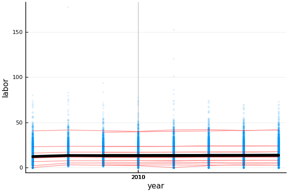

This work is licensed under a Creative Commons Attribution-ShareAlike 4.0 International License
About this document¶
This document was created using Weave.jl. The code is available in on github. The same document generates both static webpages and a jupyter notebook.
Introduction¶
This assignment will reproduce some of the results of Grieco and McDevitt (2017).
Getting started¶
https://vse.syzygy.ca provides a convenient browser based interface to Julia. Open it and log in. You now need to upload the Jupyter notebook for this assignment and open it. You could download it from that link and then upload to vse.syzygy.ca. Alternatively, open a terminal in syzygy (File -> New -> Terminal). This will open a Linux shell in your browser. To download the notebook to syzygy enter
wget https://ubcecon567.github.io/Dialysis/dialysis.ipynb
Clicking on the folder icon near the top left of the screen opens a file
browser panel. Use it to open the dialysis.ipynb notebook. I recommend
renaming your copy of this notebook. You can rename files by right
clicking in the file browser panel. Now open your copy of the notebook.
Notebooks consist of a series of “cells†of either text written in markdown or Julia code. If you double click on any of the text cells, you can see the markdown that created it. To go back to the formatted text, execute the cell by either clicking the play icon on the top of the page or typing ctrl and enter together.
Julia resources¶
This assignment will try to explain aspects of Julia as needed. However, if at some point you feel lost, you may want to consult some of the following resources. Reading the first few sections of either QuantEcon or Think Julia is recommended.
Resources¶
-
Think Julia A detailed introduction to Julia and programming more generally. Long, but recommended, especially if you’re new to programming.
-
From the julia prompt, you can access documentation with
?functionname. Some packages have better documentation than others. -
https://julialang.org/ is the website for Julia
-
Documentation for core Julia can be found at https://docs.julialang.org/en/v1/. All Julia packages also have a github page. Many of these include package specific documentation.
-
Notes on Julia from ECON 622 much of this is part of QuantEcon, but not all
-
The Julia Express short book with examples of Julia usage
Part I: Loading and exploring the data¶
Loading packages¶
Like many programming environments (R, Python, etc), Julia relies on
packages for lots of its functionality.The following code will download
and install all the packages required for this assignment (but the
packages will still need to be loaded with using ...). Execute this
cell. It will take some time. While the cell is running, there will be a
[*] to the left of it. This will change to [1] (or some other
number) after the cell is finished running. The number indicates the
order in which the cell was executed. You can execute cells out of
order. This can be useful during development, but you should always make
sure that your notebook works correctly when cells are executed in order
before considering it complete (that is, make sure the “Run -> Restart
Kernel and Run all Cells” menu option produces the output you want).
Don’t worry about understanding the details of the code in this section.
using Pkg
try
Pkg.activate(".")
using Dialysis # This assignment itself is in the "Dialysis" package. We will use some of the functions from it.
catch
Pkg.activate(".")
Pkg.add(PackageSpec(url="https://github.com/UBCECON567/Dialysis"))
using Dialysis
end
Activating environment at `~/.julia/dev/Dialysis/docs/Project.toml`
docdir = normpath(joinpath(dirname(Base.pathof(Dialysis)), "..","docs"))
Pkg.activate(docdir)
Activating environment at `~/.julia/packages/Dialysis/DfQYm/docs/Project.to
ml`
Pkg.add(PackageSpec(url="https://github.com/UBCECON567/Dialysis"))
Updating registry at `~/.julia/registries/General`
Updating git-repo `https://github.com/JuliaRegistries/General.git`
/UBCECON567/Dialysis`
/UBCECON567/Dialysis`
[?25l[2K[?25h Resolving package versions...
Updating `~/.julia/packages/Dialysis/DfQYm/docs/Project.toml`
[a93c6f00] + DataFrames v0.20.0
[9b71aec8] + Dialysis v0.1.0 #master (https://github.com/UBCECON567/Dialy
sis)
[31c24e10] + Distributions v0.21.12
[e30172f5] + Documenter v0.24.3
[997ab1e6] + DocumenterMarkdown v0.2.0
[9d5cd8c9] + FixedEffectModels v0.10.3
[f6369f11] + ForwardDiff v0.10.8
[429524aa] + Optim v0.19.7
[91a5bcdd] + Plots v0.28.4
[d330b81b] + PyPlot v2.8.2
[df47a6cb] + RData v0.7.0
[d519eb52] + RegressionTables v0.3.0
[295af30f] + Revise v2.5.0
[1277b4bf] + ShiftedArrays v1.0.0
[f3b207a7] + StatsPlots v0.13.0
[112f6efa] + VegaLite v1.0.0
[44d3d7a6] + Weave v0.9.1
[37e2e46d] + LinearAlgebra
[10745b16] + Statistics
[8dfed614] + Test
Error: SystemError: opening file "/home/paul/.julia/packages/Dialysis/DfQYm
/docs/Project.toml": Permission denied
Pkg.instantiate()
Updating registry at `~/.julia/registries/General`
Updating git-repo `https://github.com/JuliaRegistries/General.git`
[?25l[2K[?25h Resolving package versions...
Updating `~/.julia/packages/Dialysis/DfQYm/docs/Project.toml`
[a93c6f00] + DataFrames v0.20.0
[31c24e10] + Distributions v0.21.12
[e30172f5] + Documenter v0.24.3
[997ab1e6] + DocumenterMarkdown v0.2.0
[9d5cd8c9] + FixedEffectModels v0.10.3
[f6369f11] + ForwardDiff v0.10.8
[429524aa] + Optim v0.19.7
[91a5bcdd] + Plots v0.28.4
[d330b81b] + PyPlot v2.8.2
[df47a6cb] + RData v0.7.0
[d519eb52] + RegressionTables v0.3.0
[295af30f] + Revise v2.5.0
[1277b4bf] + ShiftedArrays v1.0.0
[f3b207a7] + StatsPlots v0.13.0
[112f6efa] + VegaLite v1.0.0
[44d3d7a6] + Weave v0.9.1
[37e2e46d] + LinearAlgebra
[10745b16] + Statistics
[8dfed614] + Test
Error: SystemError: opening file "/home/paul/.julia/packages/Dialysis/DfQYm
/docs/Project.toml": Permission denied
Load the data¶
Now let’s get to work. I originally downloaded the data for this problem set from https://dialysisdata.org/content/dialysis-facility-report-data. As in Grieco and McDevitt (2017) the data comes from Dialysis Facility Reports (DFRs) created under contract to the Centers for Medicare and Medicaid Services (CMS). However, there are some differences. Most notably, this data covers 2006-2014, instead of 2004-2008 as in Grieco and McDevitt (2017) .
The R script
downloadDialysisData.R
downloads, combines, and cleans the data. Unfortunately,
dialysisdata.org has reorganized their website, and the data no longer
seems to be available. Similar (likely identical) data is available from
https://data.cms.gov/browse?q=dialysis. It might be useful to look at
the documentation included with any of the “Dialysis Facility Report
Data for FY20XX” zip files. Anyway, the result of the R script is the
dialysisFacilityReports.rda file contained in the git repository for
this assignment. This R data file contains most of the variables used by
Grieco and McDevitt (2017).
using DataFrames # DataFrames.jl is a package for storing and
# interacting with datasets
dialysis = loaddata() # loaddata() is a function I wrote that is part
# of Dialysis.jl. It returns a DataFrame
typeof(dialysis)
DataFrame
We will begin our analysis with some exploratory statistics and figures. There are at least two reasons for this. First, we want to check for any anomalies in the data, which may indicate an error in our code, our understanding of the data, or the data itself. Second, we should try to see if there are any striking patterns in the data that deserve extra attention. We can get some information about all the variables in the data as follows
describe(dialysis)
58×8 DataFrame. Omitted printing of 1 columns
│ Row │ variable │ mean │ min │ median │ max
│ nunique │ nmissing │
│ │ Symbol │ Union… │ Any │ Union… │ Any
│ Union… │ Union… │
├─────┼───────────────────────┼──────────┼──────────────┼─────────┼────────
───────────┼─────────┼──────────┤
│ 1 │ provfs │ │ ="012306" │ │ ="68256
7" │ 7015 │ │
│ 2 │ year │ 2010.23 │ 2006.0 │ 2010.0 │ 2014.0
│ │ │
│ 3 │ comorbidities │ 4.70985 │ 0.44444 │ 4.69811 │ 10.7619
│ │ 7982 │
│ 4 │ comorbidities_p3 │ 4.70985 │ 0.44444 │ 4.69811 │ 10.7619
│ │ 7982 │
│ 5 │ hemoglobin │ 9.77373 │ 3.6 │ 9.7727 │ 18.0
│ │ 1608 │
│ 6 │ hemoglobin_p3 │ 9.77326 │ 3.6 │ 9.7715 │ 18.0
│ │ 1608 │
│ 7 │ std_mortality │ 1.00545 │ 0.0 │ 0.96694 │ 4.97293
│ │ 2239 │
⋮
│ 51 │ patient_esrd_years │ 4.4062 │ 0.3121 │ 4.3491 │ 19.9425
│ │ 131 │
│ 52 │ treatment_type │ │ Hemodialysis │ │ Unavail
able │ 4 │ │
│ 53 │ inspect_date │ │ 1992-05-20 │ │ 2015-05
-29 │ 3273 │ 329 │
│ 54 │ inspect_result │ │ . │ │ Unknown
│ 12 │ 2011 │
│ 55 │ inspect_cfc_cites │ 0.293753 │ 0.0 │ 0.0 │ 10.0
│ │ 3918 │
│ 56 │ inspect_std_cites │ 5.89393 │ 0.0 │ 4.0 │ 153.0
│ │ 3921 │
│ 57 │ days_since_inspection │ 704.886 │ -177.0 │ 557.0 │ 7454.0
│ │ 329 │
│ 58 │ original_chain_name │ │ │ │ WELLSPA
N DIALYSIS │ 189 │ │
The meaning of these variables are as follows:
| Variable | Definition |
|---|---|
| provfs | provider identifier |
| year | year |
| comorbidities | average patient comorbidities |
| hemoglobin | average patient hemoglobin level |
| std_mortality | standardized mortality ratio |
| std_hosp_days | standardized hospitalization days |
| std_hosp_admit | standardized hospitalization admittance rate |
| pct_septic | percent of patients hospitalized due to septic infection |
| n_hosp_admit | number of hospitalizations |
| n_hosp_patients | |
| patient_years_hd | patient years at risk of hospitalization |
| city | city |
| name | provider name |
| state | state |
| chain_name | name of chain if provider is part of one |
| profit_status | whether for profit |
| stations | number of dialysis stations |
| total_staff | total staff |
| dieticiansFT | full-time renal dieticians |
| dieticiansPT | part-time renal dieticians |
| nurseFT | full-time nurses (>32 hours/week) |
| nursePT | part-time nurses (\<32 hours/week) |
| ptcareFT | full-time patient care technicians |
| ptcarePT | part-time patient care technicians |
| social_workerFT | full-time social workers |
| social_workerPT | part-time social workers |
| patient_months | number of patient-months treated during the year |
| patient_years_rom | patient-years at risk of mortality |
| pct_fistula | the percentage of patient months in which the patient received dialysis through arteriovenous (AV) fistulae |
| pct_female | percent of female patients |
| patient_age | average age of patients |
| patient_esrd_years | average number of years patients have had end stage renal disease |
| treatment_type | types of treatment provided at facility |
| inspect_date | date of most recent inspection |
| inspect_result | result of most recent inspection |
| inspect_cfc_cites | number of condition for coverage deficiencies in most recent inspection |
| inspect_std_cites | number of standard deficiencies in most recent inspection |
| days_since_inspection | days since last inspection |
The raw data contains information on many variables in each of the previous 4 years. Staffing variables with no suffix are staff as of January 31, year as reported in year + 1. Staffing variables with “.l1†are staff as of January 31, year - 1 as reported in year + 1. If there were no reporting errors, the .l1 variables would equal the lag of the ones without .l1. However, you might find that this is not the case.
As explained in downloadDialysisData.R, data collected in year Y has information on most variables in years Y-1, Y-2, Y-3, and Y-4. However, for some variables and survey years, only information in years Y-2, Y-3, Y-4 is included. For such variables, at year Y-1, I use the value reported in survey year Y if it is available. If not, I use the value reported in survey year Y+1. The variables ending with “.p3†instead use the convention to use use Y-2 values if available and the Y-1 ones if not. Again, if there were no reporting errors the variables with and without .p3 would be the same.
There are three variables for the number of patients treated. The data
documentation describes patient_months as
“Prevalent Hemodialysis Patient Months (7a): The monthly prevalent hemodialysis patient count at a facility includes all non-transient patients (home and in-center) who receive hemodialysis as of the last day of that calendar month. Incident patients (those who received ESRD treatment for the first time ever) are included in this count. Row 7a reports the number of prevalent hemodialysis patient months reported at the facility each year. The number of patient months over a time period is the sum of patients reported for the months covered by the time period. An individual patient may contribute up to 12 patient months per year.”
patient_years_rom is the number of patient years at risk of mortality.
patient_years_hd is number of patient years at risk of
hospitalization. Since hospitalization data is constructed from Medicare
records, a patient is considered at risk of hospitalization only when
one can be reasonably certain that a hospitalization would be billed to
Medicare. Dialysis patients who pay for for hospitalization with other
methods could have unobserved hospitalizations. The data guide explains,
“Ideally, this table includes only patients whose Medicare billing records include all hospitalizations for the period. To achieve this goal, we require that patients reach a certain level of Medicare-paid dialysis bills to be included in hospitalization statistics, or that patients have Medicare-paid inpatient claims during the period. For the purpose of analysis, each patient’s follow-up time is broken into periods defined by time since dialysis initiation. For each patient, months within a given period are included if that month in the period is considered ‘eligible’; a month is deemed eligible if it is within two months of a month having at least \$900 of Medicare-paid dialysis claims or at least one Medicare-paid inpatient claim. In setting this criterion, our aim is to achieve completeness of information on hospitalizations for all patients included in the years at risk.”
Create some variables¶
Not all variables used Grieco and McDevitt (2017) are included here. Some variables will need to be transformed to be comparable to what is in the paper. For example, net investment in stations in year $t$ is the difference between the number of stations in year $t+1$ and year in $t$.
# sort data by :provfs, :year
# function names that end with ! indicate that the function will
# modify one (or more) of its inputs. In this case, sort! modifies the
# dialysis DataFrame
sort!(dialysis, (:provfs, :year))
# things starting with : are Symbols. Names of variables within a
# DataFrame must be Symbols, so they all start with :
# we can access a single column of DataFrame by writing
# dialysis[!,:stations] . This will be a 1 dimensional Array containing
# of length equal to the number of rows in the dialysis DataFrame
# panellag is a function defined in Dialysis.jl it creates lags and
# leads of variables in panel data. It will insert missing values
# where appropriate.
# putting dialysis[!,:invest] on the left will create a new column in
# the dialysis dataframe
dialysis[!,:invest] = panellag(:stations, dialysis, :provfs, :year, -1) -
dialysis[!,:stations]; # ; prevents the notebook from printing the
# output of the last command. Otherwise, notebooks display the output
# of the last command in each cell.
We can also create labor and hiring. Note that the choices of giving 0.5 weight to part-time workers, including social workers, and weighting all types of staff equally are all somewhat arbitrary and may not agree exactly with what Grieco and McDevitt (2017) did.
dialysis[!,:labor] = (dialysis[!,:nurseFT] + 0.5*dialysis[!,:nursePT]+
dialysis[!,:ptcareFT] + 0.5*dialysis[!,:ptcarePT] +
dialysis[!,:dieticiansFT] + 0.5*dialysis[!,:dieticiansPT] +
dialysis[!,:social_workerFT] + 0.5*dialysis[!,:social_workerPT])
dialysis[!,:hiring] = panellag(:labor, dialysis, :provfs, :year, -1) -
dialysis[!,:labor];
Creating for profit and chain indicators.
# create a Boolean for profit indicator
dialysis[!,:for_profit] = dialysis[!,:profit_status].=="For Profit"
# The dot in .== is an example of broadcasting. It's very common to
# want to apply the same function to all elements of an
# array. Broadcasting does exactly this. If A is an array, and f() is
# a function that operates on scalars, then f.(A) will apply f to each
# element of A and return an array of the results. The above .==
# compares each element of the array dialysis[!,:profit_status] to the
# scalar string "For Profit"
# similarly create indicators for the two largest chains
dialysis[!,:fresenius] = dialysis[!,:chain_name].=="FRESENIUS"
dialysis[!,:davita] = dialysis[!,:chain_name].=="DAVITA";
State inspection rates are a bit more complicated to create.
using Statistics # for mean, std, and so on
# first make an indicator for inspected in the last year
dialysis[!,:inspected_this_year] =
((dialysis[!,:days_since_inspection].>=0) .&
(dialysis[!,:days_since_inspection].<365))
# then take the mean by state
stateRates = by(dialysis, [:state, :year],
# by(data, :var, f) will apply f to each group of data
# with a different value of :var
df -> mean(skipmissing(df[!,:inspected_this_year])))
# df -> mean(skipmissing(df[!,:inspected_this_year])) is a shorthand way
# to define a function it's equalivant to
#
# function f(df)
# mean(skipmissing(df[!,:inspected_this_year]))
# end
#
# skipmissing skips missing values inside a DataFrame. Most arithmetic
# functions will not do what you want if missing values are included.
# rename the variable in the stateRates DataFrame
rename!(stateRates, :x1 => :state_inspection_rate)
# merge the stateRates with the dialysis data
dialysis = join(dialysis, stateRates, on = [:state, :year]);
Creating the number of competitors in the same city is somewhat similar. Note that Grieco and McDevitt (2017) use the number of competitors in the same HSA, which would be preferrable. However, this dataset does not contain information on HSAs. If you are feeling ambitious, you could try to find data linking city, state to HSA, and use that to calculate competitors in the same HSA.
dialysis[!,:city] = uppercase.(dialysis[!,:city])
comps = by(dialysis,[:city,:year],
df -> mapreduce((x) -> ifelse(ismissing(x),0,1*(x>0)), +, df[!,:patient_months])
)
rename!(comps, :x1 => :competitors)
dialysis = join(dialysis, comps, on = [:city,:year]);
Problem 1: Summary statistics¶
Creata a table (or multiple tables) similar to Tables 1-3 of Grieco and McDevitt (2017). Comment on any notable differences. The following code will help you get started.
using Statistics
# at the very least, you will need to change this list
vars = [:patient_years_rom, :labor, :hiring]
# You shouldn't neeed to change this function, but you can if you want
function summaryTable(df, vars;
funcs=[mean, std, x->length(collect(x))],
colnames=[:Variable, :Mean, :StDev, :N])
# In case you want to search for information about the syntax used here,
# [XXX for XXX] is called a comprehension
# The ... is called the splat operator
DataFrame([vars [[f(skipmissing(df[!,v])) for v in vars] for f in funcs]...], colnames)
end
summaryTable(dialysis, vars)
3×4 DataFrame
│ Row │ Variable │ Mean │ StDev │ N │
│ │ Any │ Any │ Any │ Any │
├─────┼───────────────────┼──────────┼─────────┼───────┤
│ 1 │ patient_years_rom │ 67.1459 │ 45.6089 │ 48224 │
│ 2 │ labor │ 13.1744 │ 8.34365 │ 42512 │
│ 3 │ hiring │ 0.422357 │ 4.30587 │ 34665 │
Problem 2: exploratory figures¶
Create some figures to explore the data. Try to be creative. Are there any strange patterns or other obvious problems with the data?
Here are some examples to get started. You may want to look at the StatPlots.jl, Plots.jl, or VegaLite.jl github pages for more examples.
Comparing output measures¶
using StatsPlots , Plots
Plots.pyplot()
dialysis[!,:patient_years] = dialysis[!,:patient_months]/12
# missings will mess up corrplot
vars = [:patient_years, :patient_years_hd, :patient_years_rom]
inc = completecases(dialysis[:,vars])
@df dialysis[inc,vars] corrplot(cols(vars))
Trends over time¶
function yearPlot(var)
data = dialysis[completecases(dialysis[:,[:year, var]]),:]
scatter(data[!,:year], data[!,var], alpha=0.1, legend=:none,
markersize=3, markerstrokewidth=0.0)
yearmeans = by(data, :year,
mean = var => x->mean(skipmissing(x)),
q01 = var => x->quantile(skipmissing(x), 0.01),
q10 = var => x->quantile(skipmissing(x), 0.1),
q25 = var => x->quantile(skipmissing(x), 0.25),
q50 = var => x->quantile(skipmissing(x), 0.50),
q75 = var => x->quantile(skipmissing(x), 0.75),
q90 = var => x->quantile(skipmissing(x), 0.9),
q99 = var => x->quantile(skipmissing(x), 0.99))
@df yearmeans plot!(:year, :mean, colour = ^(:black), linewidth=4)
@df yearmeans plot!(:year, cols(3:ncol(yearmeans)),
colour = ^(:red), alpha=0.4, legend=:none,
xlabel="year", ylabel=String(var))
end
yearPlot(:labor)

The above plot shows a scatter of labor vs year. The black lines are average labor each year. The red lines are the 0.01, 0.1, 0.25, 0.5, 0.75, 0.9, and 0.99 quantiles conditional on year.
Part II: estimating the model¶
Problem 3: Quality measures¶
Grieco and McDevitt (2017) use the residuals from regressing the infection rate on patient characteristics as a measure of quality. Since the infection rate is a noisy measure of quality, they instrument with the standardized mortality ratio as a second measure of quality. Medicare collects the data we are using in part to create the “Dialysis Facility Compare†website, which is meant to allow consumers to compare quality of dialysis facilities. Browsing around the Dialysis Facility Compare or by looking at the first few pages of a sample Dialysis Facility Report, you will see that there are a number of other variables that Medicare considers indicators of quality. Pick one of these (it may or may not be included in the extract of data I provided), and argue for or against using it instead of or in addition to the septic infection rate and standardized mortality ratio.
We can construct residuals from an OLS regression as follows:
"""
ols_residuals(data::AbstractDataFrame, y::Symbol,
x::Array{Symbol,1}; intecept::Bool=true)
This is a doc string. After executing this cell, if you type ?ols_residuals, you
will see this text.
Calculate residuals from an OLS regression of data[y] on data[x]
Inputs:
- `data` DataFrame containg y and x
- `y` Symbol specifying y variable
- `x` Symbol specifying x variables
Output:
- Vector of residuals of length = nrow(data)
"""
function ols_residuals(data::DataFrame, y::Symbol,
x::Array{Symbol,1};
# arguments following the
# are optional
intercept::Bool=true
)
# The :: are type specifications. They could be left out, and this
# function would still work just fine. One of their purposes are to
# document what inputs this function expects, and throw useful error
# messages if someone tries calling the function on the wrong types.
inc = completecases(data[:,[y, x...]]) # deal with missing
Y = disallowmissing(data[inc,y])
if (intercept)
X = [ones(sum(inc)) data[inc,x]]
else
X = data[inc,x]
end
X = disallowmissing(convert(Matrix, X))
# you can type Greek and some other LaTeX characters by typing their LaTeX
# code followed by tab, e.g. \beta<TAB> and \in<TAB>
β = X \ Y # β ∈ argmin_b || X*b - Y ||
ϵ = Y - X*β
if (any(.!inc)) # add back in missings
resid = Array{Union{Missing,eltype(ϵ)},1}(undef, nrow(data))
resid .= missing
resid[inc] = ϵ
return(resid)
else # no missing, just return ϵ
return(ϵ)
end
end
q = -ols_residuals(dialysis, :pct_septic, [:days_since_inspection,
:patient_age,
:pct_female,
:patient_esrd_years,
:pct_fistula,
:comorbidities,
:hemoglobin]);
Of course, regression is common enough that there are already Julia
packages for it. I included the ols_residuals only for pedagogical
purposes. Whenever there exists a well-used package, it is (usually)
better to use the package than try to write your own functions. Here’s
how to accomplish the same thing using FixedEffectModels.jl.
using FixedEffectModels
dialysis[!,:idcat] = categorical(dialysis[!,:provfs])
# FixedEffectModels requires clustering and fixed effect variables to
# be categorical
qreg = reg(dialysis, @formula(pct_septic ~ days_since_inspection + patient_age +
pct_female + patient_esrd_years + pct_fistula + comorbidities +
hemoglobin), Vcov.cluster(:idcat),save=true) # saves residuals in augmentdf
dialysis[!,:quality] = -qreg.augmentdf[!,:residuals]
# Let's test that these results are the same from ols_residuals
println("Mean absolute difference = $(mean(skipmissing( abs.(q.- dialysis[!,:quality]) )))")
Mean absolute difference = 5.453941239030147e-14
# using $(expr) in a string will insert the result of expr in the$
# string
using Test
@test all(skipmissing(q .≈ dialysis[!,:quality])) == true
Test Passed
Testing is an important part of software development. The Test.jl package provides help function for running tests. See these notes from 622 for more information about testing.
Problem 4: OLS and fixed effects estimates¶
Reproduce columns 2,3, 5, and 6 of Table 5. The syntax for fixed effects regression is shown below:
# you may want to use patient_years_hd or patient_years_rom instead
log_infmiss = x->ifelse(!ismissing(x) && x>0, log(x), missing) # -Inf confuses reg()
dialysis[!,:lpy] = log_infmiss.(dialysis[!,:patient_months]./12)
dialysis[!,:logL] = log_infmiss.(dialysis[!,:labor])
dialysis[!,:logK] = log_infmiss.(dialysis[!,:stations])
# you may want to restrict sample to match sample that can be used in model estimates
reg(dialysis, @formula(lpy ~ quality + logK + logL + fe(idcat)), Vcov.cluster(:idcat))
Fixed Effect Model
=========================================================================
Number of obs: 32013 Degrees of freedom: 4
R2: 0.882 R2 Adjusted: 0.882
F Statistic: 312.361 p-value: 0.000
R2 within: 0.144 Iterations: 1
Converged: true
=========================================================================
Estimate Std.Error t value Pr(>|t|) Lower 95% Upper 95%
-------------------------------------------------------------------------
quality -0.00921389 0.000589458 -15.6311 0.000 -0.0103692 -0.00805853
logK 0.171904 0.028534 6.02452 0.000 0.115976 0.227831
logL 0.470537 0.0171159 27.4912 0.000 0.43699 0.504085
=========================================================================
Be sure to add the other columns. If you’d like, you could use RegressionTables.jl to produce tables that look a lot like the ones in the paper.
Estimation of $\alpha$¶
As discussed in section 5 of Grieco and McDevitt
(2017), the coefficient on quality, $\alpha$, is
estimated from with a second noisy measure of quality, $z_{jt}$, used to instrument
for $q_{jt}$. To estimate $\alpha$, first the exogenous variables, $w$,
can be partialed out to give: where we used the assumption that $\Er[\epsilon_{jt} | w_{jt} ] = 0$
and the fact that $\Er[\Phi(w) | w] = \Phi(w)$. Under the assumption
that $\Er[\epsilon| z, w] = 0$, we can estimate $\alpha$ based on the
moment condition: If $Var(\epsilon|z,w)$ is constant, the efficient choice of $f(z,w)$
is To estimate $\alpha$, we simply replace these conditional
expectations with regression estimates, and replace the unconditional
expectation with a sample average. Let $\hat{\Er}[y|w]$ denote a
nonparmetric estimate of the regression of $y$ on $w$. Then, The function partiallinearIV in Dialysis.jl will estimate this
model. Also included are two methods for estimating $\hat{E}[y|w]$.
polyreg estimates a polynomial series regression, that is it regresses
$y$ on a polynomial of degree $d$ in $w$. To allow the regression to
approximate any function, the degree must increase with the sample size,
but to control variance, the degree must not increase too quickly. We
will not worry too much about the choice of degree here.
An alternative method (and what Grieco and McDevitt
(2017) used) is local linear regression. To estimate
$\hat{E}[y|x_{jt}]$, local linear regression estimates a linear
regression of $y$ on $x$, but weights observations by how close $x_{it}$
is to $x_{jt}$. That is, where Here $k()$ is some function with its maximum at 0 (and has some other
properties), like $k(x) \propto e^{-x^2}$. The bandwidth, $h_n$,
determines how much weight to place on observations close to vs far from
$x_{jt}$. Similar to the degree in polynomial regression, the bandwidth
must decrease toward 0 with sample size allow local linear regression to
approximate any function, but to control variance the bandwidth must not
decrease too quickly. We will not worry too much about the choice of
bandwidth. Anyway, the function locallinear in Dialysis.jl estimates a
local linear regression.
Problem 5: $\alpha$¶
Estimate $\alpha$ using the following code. You may want to modify some aspects of it and/or report estimates of $\alpha$ for different choices of instrument, nonparametric estimation method, degree or bandwidth. Compare your estimate(s) of $\alpha$ with the ones in Tables 5 and 6 of Grieco and McDevitt (2017).
# create indicator for observations usable in estimation of α
inc1 = ((dialysis[!,:patient_months] .> 0) .& (dialysis[!,:labor] .> 0) .&
(dialysis[!,:stations] .> 0) .&
.!ismissing.(dialysis[!,:quality]) .&
.!ismissing.(dialysis[!,:std_mortality]) .&
(dialysis[!,:invest].==0) .&
(dialysis[!,:hiring].!=0));
inc1[ismissing.(inc1)] .= false;
dialysis[!,:inc1] = inc1;
dialysis[!,:lsmr] = log.(dialysis[!,:std_mortality] .+ .01)
# As degree → ∞ and/or bandwidth → 0, whether we use :std_mortality or
# some transformation as the instrument should not matter. However,
# for fixed degree or bandwidth it will have some (hopefully small)
# impact.
(α, Φ, αreg, eyqz)=partiallinearIV(:lpy, # y
:quality, # q
:lsmr, # z
[:hiring, :logL, :logK,
:state_inspection_rate, :competitors], # w
dialysis[findall(dialysis[!,:inc1]),:];
npregress=(xp, xd,yd)->polyreg(xp,xd,yd,degree=1),
parts=true
# You may want to change the degree here
#
# You could also change `polyreg` to
# `locallinear` and `degree` to
# `bandwidthmultiplier`
#
# locallinear will likely take some time to
# compute (≈350 seconds on my computer)
)
# we will need these later in step 2
dialysis[!,:Φ] = similar(dialysis[!,:lpy])
dialysis[:,:Φ] .= missing
rows = findall(dialysis[!,:inc1])
dialysis[rows,:Φ] = Φ
dialysis[!,:ey] = similar(dialysis[!,:lpy])
dialysis[:,:ey] .= missing
dialysis[rows,:ey] = eyqz[:,1]
dialysis[!,:eq] = similar(dialysis[!,:lpy])
dialysis[:,:eq] .= missing
dialysis[rows,:eq] = eyqz[:,2]
dialysis[!,:ez] = similar(dialysis[!,:lpy])
dialysis[:,:ez] .= missing
dialysis[rows,:ez] = eyqz[:,3]
α
-0.016731503377462428
Brief introduction to GMM¶
The coefficients on labor and capital are estimated by GMM. The idea of GMM is as follows. We have a model that implies where $y$, $x$, and $z$ are observed variables. $c(y,x;\theta)$ is some known function of the data and some parameters we want to estimate, $\theta$. Often, $c(y,x;\theta)$ are the residuals from some equation. For example, for linear IV, we’d have The conditional moment restriction above implies that for any function $f()$. We can then estimate $\theta$ by replacing the population expectation with a sample average and finding $\hat{\theta}$ such that The dimension of $f(z)$ should be greater than or equal to the dimension of $\theta$, so we have at least as many equations as unknowns. We find this $\hat{\theta}$ by minimizing a quadratic form of these equations. That is, were $g_i(\theta) = c(y_i, x_i;\theta)f(z_i)$, and $W_n$ is some positive definite weighting matrix.
Problem 6: OLS by GMM¶
As practice with GMM, use it to estimate a simple regression model, assuming $\Er[\epsilon|x] = 0$. Test your code on simulated data. The following will help you get started.
function sim_ols(n; β = ones(3))
x = randn(n, length(β))
ϵ = randn(n)
y = x*β + ϵ
return(x,y)
end
β = ones(2)
(x, y) = sim_ols(100; β=β)
βols = (x'*x) \ (x'*y)
function gmm_objective(β)
gi = (y - x*β) .* x
Egi = mean(gi, dims=1)
error("This is incomplete; you must finish it")
# It is is likely that the code you will write will return a 1 x 1,
# 2 dimensional array. For compatibility with Optim, you need to
# return a scalar. If foo is a 1x1 array, write `foo[1]` to return a scalar instead of
# 1x1 array
end
# minimizer gmm_objective
using Optim # github page : https://github.com/JuliaNLSolvers/Optim.jl
# docs : http://julianlsolvers.github.io/Optim.jl/stable/
try
res = optimize(gmm_objective,
zeros(size(β)), # initial value
BFGS(), # algorithm, see http://julianlsolvers.github.io/Optim.jl/stable/
autodiff=:forward)
βgmm = res.minimizer
catch err
@info err
βgmm = βols
res = nothing
end
@test βgmm ≈ βols
Error During Test at none:1
Test threw exception
Expression: βgmm ≈ βols
UndefVarError: βgmm not defined
Stacktrace:
[1] top-level scope at /home/paul/.julia/dev/Dialysis/docs/makeweave.jl:
10
[2] eval at ./boot.jl:330 [inlined]
[3] capture_output(::Expr, ::Module, ::Bool, ::Bool, ::Bool, ::Bool) at
/home/paul/.julia/packages/Weave/UOxmI/src/run.jl:230
[4] run_code(::Weave.CodeChunk, ::Weave.Report, ::Module) at /home/paul/
.julia/packages/Weave/UOxmI/src/run.jl:208
[5] eval_chunk(::Weave.CodeChunk, ::Weave.Report, ::Module) at /home/pau
l/.julia/packages/Weave/UOxmI/src/run.jl:289
[6] run_chunk(::Weave.CodeChunk, ::Weave.WeaveDoc, ::Weave.Report, ::Mod
ule) at /home/paul/.julia/packages/Weave/UOxmI/src/run.jl:130
[7] #run#34(::String, ::Module, ::String, ::Dict{String,Bool}, ::String,
::Nothing, ::String, ::Symbol, ::Bool, ::typeof(run), ::Weave.WeaveDoc) at
/home/paul/.julia/packages/Weave/UOxmI/src/run.jl:94
[8] (::Base.var"#kw##run")(::NamedTuple{(:doctype, :mod, :out_path, :arg
s, :fig_path, :fig_ext, :cache_path, :cache, :throw_errors),Tuple{String,Mo
dule,String,Dict{String,Bool},String,Nothing,String,Symbol,Bool}}, ::typeof
(run), ::Weave.WeaveDoc) at ./none:0
[9] #weave#16(::String, ::Symbol, ::String, ::Dict{String,Bool}, ::Modul
e, ::String, ::Nothing, ::String, ::Symbol, ::Bool, ::Nothing, ::Nothing, :
:Nothing, ::Array{String,1}, ::String, ::typeof(weave), ::String) at /home/
paul/.julia/packages/Weave/UOxmI/src/Weave.jl:121
[10] (::Weave.var"#kw##weave")(::NamedTuple{(:out_path, :cache, :cache_p
ath, :doctype, :mod, :args),Tuple{String,Symbol,String,String,Module,Dict{S
tring,Bool}}}, ::typeof(weave), ::String) at ./none:0
[11] top-level scope at /home/paul/.julia/dev/Dialysis/docs/makeweave.jl
:13
Error: Test.FallbackTestSetException("There was an error during testing")
res
Error: UndefVarError: res not defined
Estimating $\beta$¶
The model implies that and {#eq:eta} The timing and exogeneity assumptions imply that Given a value of $\beta$, and our above estimates of $\Phi$ and $\alpha$, we can compute $\omega$ from the equation above, and then estimate $g()$ and $\eta$ by a nonparametric regression of $y_{jt} - \alpha q_{jt} - \beta_k k_{jt} - \beta_l l_{jt}$ on $\omega_{jt-1}$. $\beta$ can then be estimated by finding the value of $\beta$ that comes closest to satisfying the moment condition To do this, we minimize
Problem 7: estimate $\beta$¶
Write the body of the $Q_n(\beta)$ function below. Use it to estimate $\beta$. Compare your results with those of Grieco and McDevitt (2017). Optionally, explore robustness of your results to changes in the specification.
# indicator for observations usable in estimation of β
dialysis[!,:inclag] = panellag(:inc1, dialysis, :provfs, :year, 1);
dialysis[!,:inc2] = (dialysis[!,:inclag] .&
(dialysis[!,:stations].>0) .&
(dialysis[!,:labor].>0) .&
(dialysis[!,:patient_years].>0) .&
.!ismissing.(dialysis[!,:quality]));
dialysis[ismissing.(dialysis[!,:inc2]),:inc2] .= false;
(ωfunc, ηfunc) = errors_gm(:lpy, :logK, :logL, :quality, :Φ, :provfs, :year,
dialysis, α; degree=1)
function Qn(β)
η = ηfunc(β)
error("You must write the body of this function")
end
using Optim
try
res = optimize(Qn, # objective
[0.0, 0.0], # lower bounds, should not be needed, but
# may help numerical performance
[1.0, 1.0], # upper bounds
[0.4, 0.2], # initial value
Fminbox(BFGS()), # algorithm
autodiff=:forward)
β = res.minimizer
@show β
catch err
@info err
res = nothing
β = nothing
end
res
Error: UndefVarError: res not defined
Inference¶
Since the estimation above consists of multiple steps, constructing standard errors is not quite as simple as for single step estimators. The estimate of $\beta$ in the second step depends on the first step estimate of $\alpha$, so the uncertainty in the first step estimate of $\alpha$ can affect the standard error of $\beta$. It is possible to derive a formula for the asymptotic standard error of $\beta$ that takes all this into account, but the formula is somewhat long. See these notes for details. The somewhat long formula for asymptotic standard errors, has lead many applied economists to instead use the bootstrap to compute the standard error of multiple step estimators. Here are some of my notes about bootstrap along with Julia code.
Grieco, Paul L. E., and Ryan C. McDevitt. 2017. “Productivity and Quality in Health Care: Evidence from the Dialysis Industry.†The Review of Economic Studies 84 (3): 1071–1105. https://doi.org/10.1093/restud/rdw042.